Direct photon anisotropic flow as a probe of $\alpha$-clustered structure in 7A TeV $^{16}$O + $^{16}$O collisions at the LHC
ATHIC 2026 · Fudan University · Shanghai, China
Presenter : Pingal Dasgupta
Collaborators: Sanchari Thakur, Rupa Chatterjee, Sinjini Chandra, and Sidharth K. Prasad
Outline
-
QGP and Electromagnetic Probes
-
What makes O+O collisions interesting
-
Results
-
Summary
Quark–Gluon Plasma
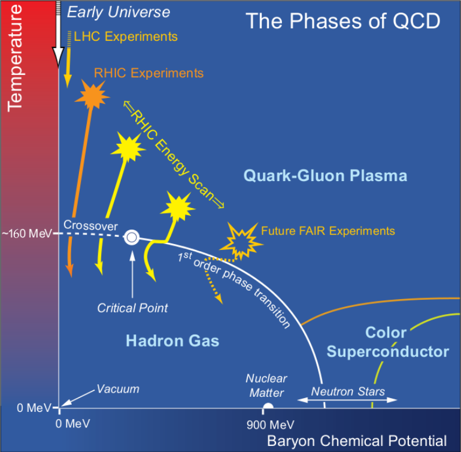
-
Relativistic heavy-ion collisions produce a deconfined phase of quarks and gluons that mimics the early universe!
-
We can learn about the thermodynamic and dynamic properties of the QGP.
Electromagnetic Probes
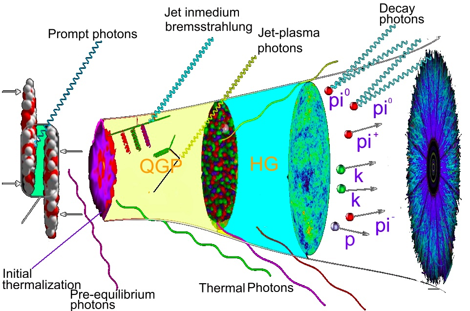
-
Electromagnetic probes are clean, they do not suffer final-state interactions.
-
They are sensitive to the initial state of the collisions and the formation time.
-
There are two types of direct signals: direct photons and dileptons.
Anisotropic Flow
- The initial spatial anisotropy ($\epsilon_2$, $\epsilon_3$, …) in the overlap zone converts into momentum anisotropy, providing evidence of a strongly interacting, hot, dense medium.
The particle momentum distribution can be expanded in a Fourier series as follows:
$\begin{equation}\label{eq: v2} \frac{dN}{d^2p_Tdy} = \frac{1}{2\pi} \frac{dN}{ p_T dp_T dy}[1+ 2 \sum_{n=1}^{\infty} v_n (p_T) \rm{cos} n (\phi - \psi_n)]. \end{equation}$
See below how flow emerges in Au+Au@200A GeV collisions from initial pressure gradients.
$\alpha$-clustering
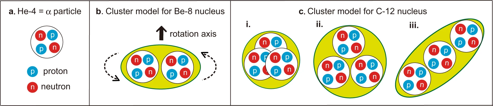
-
Clustering refers to a phenomenon in which nuclei with $A = 4N$, such as $^8$Be, $^{12}$C, and $^{16}$O, behave like molecules composed of $\alpha$-clusters.
-
Experiments still lack direct evidence for $\alpha$-clustering in the ground states of light nuclei. Some first-principles theories, such as QMD, predict clustering [Nature].
Probing α-clustered Structure in Collider Experiments
- Pioneering work: “Signatures of alpha clustering in light nuclei from relativistic nuclear collisions,” by Wojciech Broniowski and Enrique Ruiz Arriola, Phys. Rev. Lett. 112, 112501 (2014).
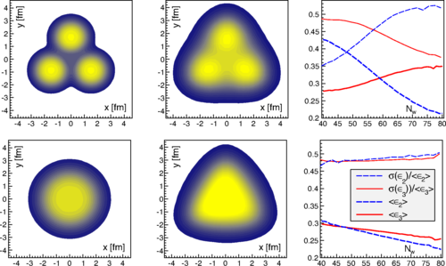
…
Effects on Direct Photons
The first studies of clustering effects on direct photon observables include:
-
“Thermal photons as a sensitive probe of $\alpha$-cluster in C+Au collisions at the BNL Relativistic Heavy Ion Collider,” PD, G.L. Ma, R. Chatterjee, et al., Eur. Phys. J. A 57 (4), 134 (2021).
-
“Production and anisotropic flow of thermal photons in collisions of $\alpha$-clustered carbon with heavy nuclei at relativistic energies,” PD, R. Chatterjee, and G.L. Ma, Phys. Rev. C 107, 044908 (2023).

Why O+O Collisions?
-
Small systems have shown promising collective behavior in flow observables.
-
Oxygen can have a ${\color{red} \rm tetrahedral}$ alpha clustered structure. Relativistic collisions can reveal geometrical asymmetries.
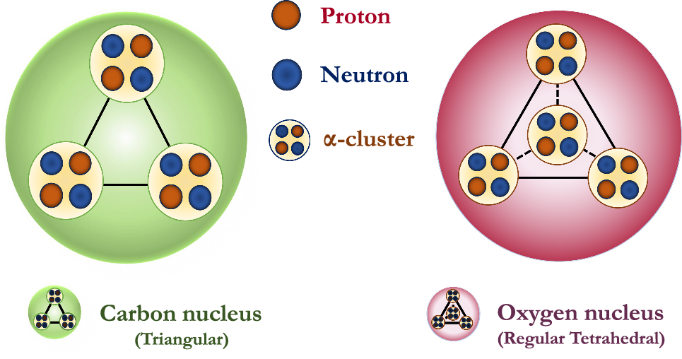
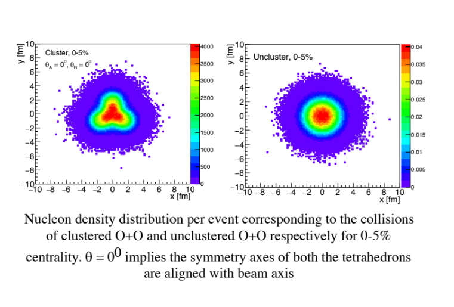
O+O Collisions at 7A TeV at the LHC
-
${\rm \color{red}GLISSANDO3}$ is an established Monte Carlo event generator used to characterize the initial stages of relativistic heavy-ion collisions.
-
Two cases are considered: clustered and unclustered.
-
GLISSANDO3 indicates that the most central collisions are important because they are expected to show geometry-dominated effects (the cluster structure) more clearly than peripheral collisions.
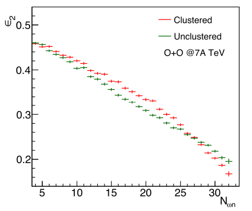
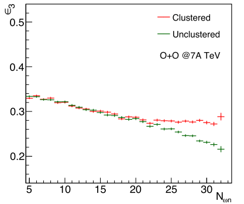
Framework: O+O at 7A TeV
-
GLISSANDO3 initial condition.
-
The ideal hydrodynamical framework $\color{red} \rm MUSIC$ is used to evolve the initial conditions.
-
The system formation time is 0.14 fm/$c$.
-
Equation of state: $\color{red}\rm lattice EOS s95p-v1$.
-
A crossover transition from hot, dense plasma to hadronic gas is assumed to occur at a temperature of about 184 MeV.
-
The freeze-out temperature is 137 MeV.
-
QGP rates: P. Arnold et al., JHEP 0112, 009 (2001) (leading-order contributions); J. Ghiglieri et al., JHEP 1305, 010 (2013) (next-to-leading-order contributions).
-
Hadronic rates: S. Turbide et al., Phys. Rev. C 69, 014903 (2004).
Anisotropic flow coefficients are defined as: $\begin{eqnarray} v_n (p_T) \ = \ \frac{\int_0^{2\pi} d\phi {\rm cos} [n (\phi-\psi_{n})] \frac{dN}{p_T dp_T dy d\phi}}{\int_0^{2\pi} d\phi \frac{dN}{p_Tdp_Tdy d\phi}} \end{eqnarray}$
Direct Photon Spectra
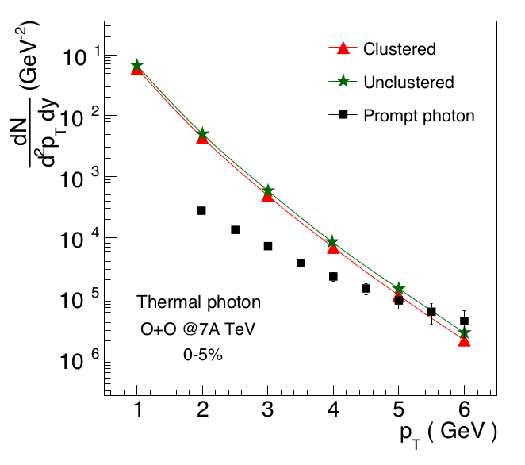
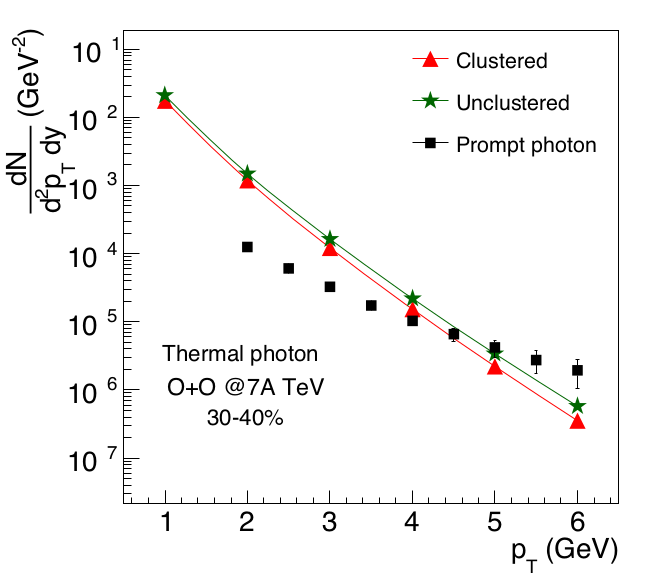
- The direct photon spectra are comparable between clustered and unclustered collisions.
Direct Photon Flow Observables
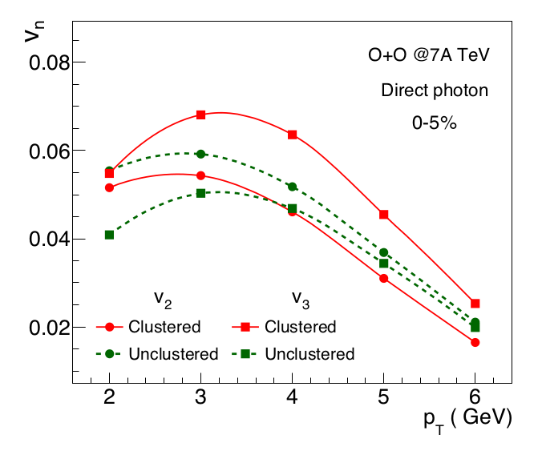
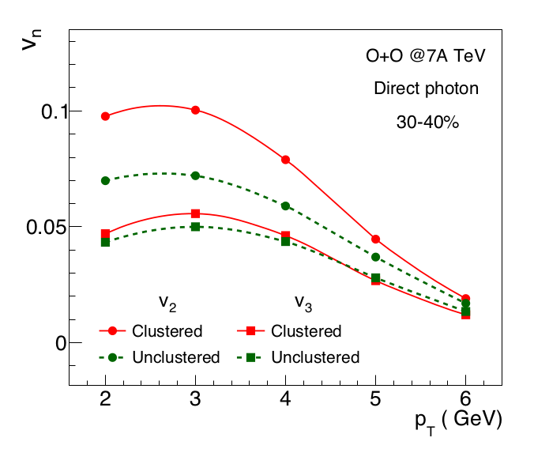
-
The direct photon $v_3$ is substantially larger in clustered than in unclustered collisions for 0–5% O+O collisions at 7A TeV. The $v_2$ in clustered collisions is slightly smaller than in unclustered collisions at the same centrality.
-
The direct photon $v_2$ is substantially larger in clustered than in unclustered collisions for 30–40% O+O collisions at 7A TeV. The $v_3$ in clustered collisions is comparable to that in unclustered collisions at the same centrality.
Ratio of Flow Observables
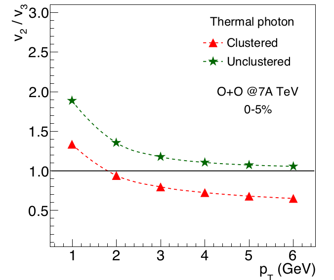
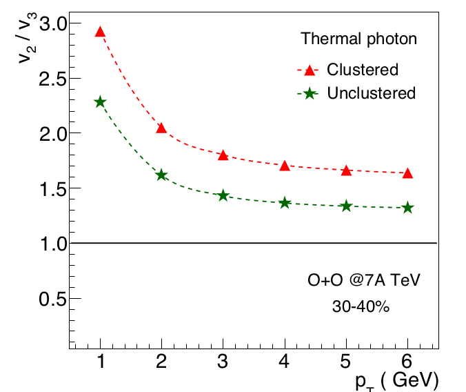
-
The ratio is an efficient observable because it is not diluted by prompt-photon contributions [RC, PD, Phys. Rev. C].
-
The ratio of $v_2$ and $v_3$ shows opposite behavior in central and peripheral collisions.
Summary
-
The $\alpha$-cluster structure in light nuclei produces significant initial spatial anisotropy, which is expected to affect the momentum anisotropy (flow) of final-state particles.
-
Measurements of photon anisotropic-flow parameters can serve as an important way to study the cluster structure.
-
We studied photon anisotropic-flow parameters in clustered and unclustered O+O collisions at 7A TeV using the hydrodynamical model MUSIC. The initial profiles used in our calculations were obtained from GLISSANDO.
-
Elliptic flow ($v_2$) is larger in the most central unclustered O+O collisions, consistent with the average initial ellipticity. Triangular flow ($v_3$) is larger in the most central clustered O+O collisions, consistent with the average initial triangular anisotropy.
-
Comparing these simulation results with data from the proposed O+O collisions at 7 TeV at the LHC could provide experimental evidence for a cluster structure in oxygen nuclei.